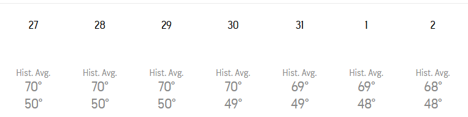
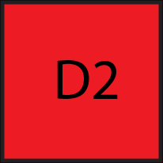
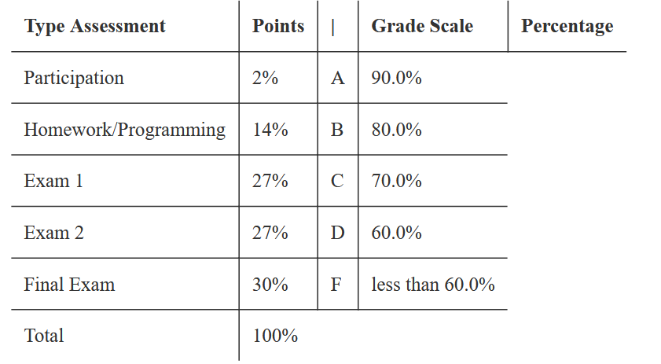

Georgia Tech has one of the better weather, in my opinion. While the summers are brutal, the winters, in my opinion, are possibly the best without going too overboard, like Florida. Sometimes the temperature can be unfair, but not often.
|  |
Late October-Early November and average temperature is still above 20 C (68 F). Put that into perspective, average temperature at this point with harsh winters is about 10-14 C (50-58 F). |
While old things might be great sometimes (often for historic reasons), I personally do not think this is the case for University Buildings. However, many buildings at Tech are so new and well-polished. It kinda gives you the ambience of "Congratulations! You have gotten into Tech!"
Unfortunately, for privacy reasons, I am unable to show you a picture of a building in Tech.
Unfortunately nothing is without some downsides, and I think finding a place to chill and study and do assignments inside Tech is pretty much almost impossible during hours where classes are going on. CULC and Crosland are pretty much at capacity, and even Smithgall can sometimes be full too. Kinda did not expect Smithgall to be full sometimes...
|  |
Ridiculous Grading Systems |
With the harsh reality of Tech, comes harsh grading systems. While some grading is lenient, many others are significantly strict. For example, there are classes with 80%, 90% or even 100% of the grades being solely on 3 or 4 exams. This makes it so that even slightly bombing a major exam is very punishing.
|  |
For example, Hudachek-Buswell's CS 1332 class has 84% of the grade based on three exams. There are also no round ups when you are close to the next grade cutoff. |
Do recognize that this syllabus is public. If you go to the Georgia Tech critique, search up CS 1332, you can find Hudachek-Buswell's CS 1332 syllabus.The link is here.